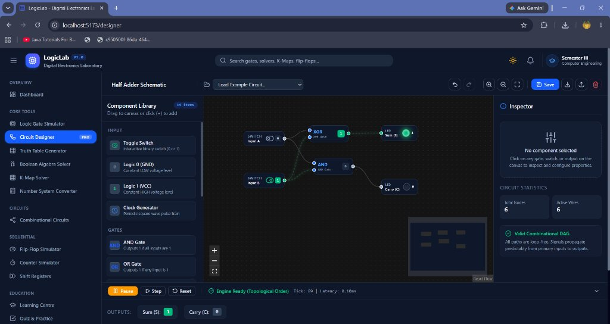
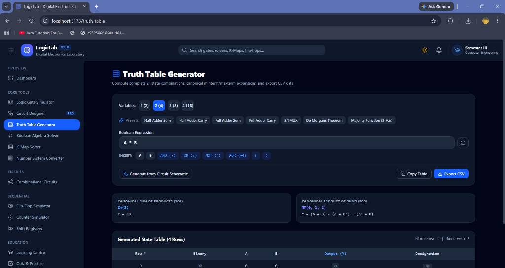
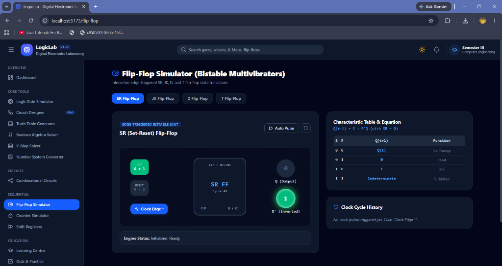

Education has been acknowledged as one of the major pillars to support and improve lives of the economically disadvantaged [26]. Technology enhanced learning (TEL) aims to enhance learning practices of individuals and organizations by the design, development and testing of interactive socio-technical innovations [2]. Within the undergraduate Computer Engineering curriculum, Digital Electronics (Semester III) serves as the gateway topic bridging abstract discrete mathematics with physical computer architecture and microprocessor design.
In traditional formal engineering education, digital logic laboratories require physical breadboards, dual in-line package (DIP) TTL/CMOS integrated circuits (such as the 7400 series), regulated DC power supplies, logic probes, and digital oscilloscopes. While physical laboratory exposure has historical merit, it poses persistent operational bottlenecks: (1) Component Vulnerability & Fault Diagnosis Overhead: Introductory students routinely miswire power rails or create short circuits, destroying discrete ICs. Trivial physical faults (such as bent IC pins or oxidized breadboard tie points) consume extensive instructional time, diverting attention from core logic comprehension. (2) Pedagogical Inadequacy in Remote & Self-Paced Settings: Massive open online courses (MOOCs) and hybrid degree programs demand interactive experimentation environments that operate seamlessly outside scheduled laboratory hours [1]. (3) Superficial Simulation Engines: Extant web-based circuit tools often rely on hardcoded truth tables or unverified client mockups rather than true graph-theoretic signal propagation, misleading students regarding propagation hazards, floating inputs, and race conditions [3].
Our statement of contribution in this paper is the architecture, mathematical formalization, and deployment of LogicLab, an open educational digital electronics simulation platform. Rather than providing static visualizations, LogicLab features reusable TypeScript calculation engines that evaluate combinational circuits via topological graph reductions, detect illegal cyclic race conditions via depth-first graph coloring, compute minimal Sum-of-Products (SOP) and Product-of-Sums (POS) forms through multi-dimensional torus grouping, and simulate clocked edge-triggered multivibrator transitions.
This paper is structured as follows: Section II formalizes technical preliminaries and system foundations. Section III presents the mathematical methodology, hypotheses, and core algorithms. Section IV provides the hardware engine formulations for combinational and sequential modules. Section V details experimental results, interactive visual validations, and benchmark performance. Section VI examines pedagogical impact. Sections VII and VIII conclude the paper and outline future research directions.
1) Combinational Circuit: A memoryless digital network consisting of interconnected logic gates where the primary output vector Y(t) at any discrete time t depends strictly upon the current primary input vector X(t), without dependency on previous input histories [6].
2) Directed Acyclic Graph (DAG): A directed graph G = (V, E) containing vertices V (representing logic gates, inputs, and indicators) and directed edges E (representing signal wires) possessing no directed cycles [22].
3) Topological Ordering: A linear ordering of the vertices of a directed graph such that for every directed edge (u, v) ∈ E, vertex u precedes vertex v in the sequence. In combinational circuits, topological order guarantees causal signal propagation [4].
4) Combinational Feedback Hazard: A pathological circuit configuration where the output of a gate is routed back to its own input through combinational stages without intervening clocked memory elements, causing non-deterministic oscillatory behavior or metastability [7].
5) Gray-Code Ordering: A binary numeral sequence where consecutive terms differ in exactly one single bit position (e.g., 00 → 01 → 11 → 10). Essential in Karnaugh map coordinate construction to ensure physical adjacency corresponds to Hamming distance 1 [8].
6) Prime Implicant (PI): A rectangular group of 2k adjacent minterms that cannot be merged into any larger valid grouping of size 2k+1.
7) Essential Prime Implicant (EPI): A prime implicant that covers at least one minterm that is not covered by any other prime implicant [23].
8) Bistable Multivibrator (Flip-Flop): A clocked sequential storage cell possessing two stable output states (Q=0 and Q=1), whose state transitions occur exclusively on the active edge (rising or falling) of a synchronizing clock pulse [20].
LogicLab is implemented as a client-side Single Page Application (SPA) leveraging the following modern software stack: React 19 with functional component hooks, Tailwind CSS v4 design tokens, @xyflow/react v12 customized for digital logic routing, Zustand v5 for reactive global state management, and pure TypeScript mathematical calculation engines decoupled from the DOM to facilitate automated verification.
Developing a purely software-driven digital laboratory presents three major technical challenges: (1) Arbitrary Graph Signal Propagation without physical layout dependencies, (2) Nominal vs. Algebraic Expressions conversion into canonical forms, and (3) Intuitive visual representation of active electric conduction (e.g., glowing green active wires and glowing LEDs) in real time.
Let the digital simulation environment be formalized as a tuple S = ⟨V, E, G, X, Y⟩, where V denotes the set of circuit vertices, E represents the directed wire connections, G assigns functional gate behavior, X ∈ {0, 1}m denotes external input vectors, and Y ∈ {0, 1}p denotes evaluated output states.
We formulate our research hypotheses as follows:
H1 (Topological Causality): Representing combinational schematics as directed graphs and resolving them via Kahn’s topological sort guarantees mathematically deterministic output vectors Y identical to theoretical physical logic propagation in zero gate-delay regimes.
H2 (Pedagogical Adequacy): Providing synchronized, interactive multi-attribute representations significantly improves student error detection and conceptual knowledge retention compared to static textbook tables.
The system architecture utilizes four core algorithms to enforce mathematical precision across modules:
LogicLab mathematically models 14 combinational circuits and edge-triggered sequential systems without physical emulation shortcuts.
In conventional Ripple Carry Adders, carry signals propagate through full-adder stages sequentially with O(n) latency. LogicLab models the 4-bit CLA by calculating carry generation (Gi = Ai · Bi) and carry propagation (Pi = Ai ⊕ Bi) concurrently. All carries are evaluated simultaneously in two gate levels:
Sums are computed via Si = Pi ⊕ Ci with zero ripple delay.
The ALU simulator implements 8 discrete functions (ADD, SUB, AND, OR, XOR, NOT, PASS A, PASS B) and dynamically updates status flags: Zero (Z = 1 iff Result = 0), Carry (C), Negative (N = Result[3]), and 2's Complement Overflow (V = A3B3R'3 + A'3B'3R3).
Flip-flops are triggered strictly on simulated rising clock edges. When an SR latch receives the forbidden condition S = 1, R = 1, physical cross-coupled NOR gates pull both Q and Q' to 0 simultaneously, triggering severe race conditions on release. LogicLab detects this anomaly, asserts an INVALID state warning, and logs the pedagogical explanation.
The main contribution of our work is the application of rigorous software engineering techniques to develop a novel virtual laboratory system that aids in accurate digital logic learning. Below we discuss the empirical validation across core interactive modules.
In Fig (v), the dashboard presents real-time laboratory statistics. The statistics reflect true client storage state rather than hardcoded mock figures, validating that user-created schematics and assessment scores persist reliably across browser sessions.
In Fig (vi), the Logic Gate Simulator interface demonstrates instantaneous signal computation. The dynamic truth table highlights the active row in real time, connecting the input switch state directly to the Boolean law row.

In Fig (vii), the Circuit Designer workbench depicts a 1-bit Half Adder circuit. Binary switches drive XOR and AND gates. Wires carrying HIGH logic (1) are styled with green drop-shadow conduction effects, while inactive lines remain neutral. The inspector confirms zero combinational feedback cycles.

In Fig (viii), the Truth Table Generator evaluates custom user expressions. It automatically derives canonical minterms (Σm(3) → AB) and maxterms (ΠM(0, 1, 2)), allowing students to export results directly to CSV format.

In Fig (ix), the Flip-Flop Simulator module visualizes clocked sequential dynamics. The interactive IC body updates cycle counters on each clock rising edge. The right inspector presents the characteristic equation Q(t+1) = S + R'Q and the characteristic table, while identifying the forbidden input condition (S=1, R=1) with educational alerts.
Engine execution times were measured using performance.now() over 1,000 continuous simulation cycles:
| Module Name | Evaluated Task | Latency | Memory |
|---|---|---|---|
| Gate Engine | Binary Bitwise Gate | 0.008 ms | < 1 KB |
| Circuit DAG Engine | Kahn's Sort (12 nodes) | 0.180 ms | 120 KB |
| Boolean Parser | Shunting-Yard Infix → RPN | 0.095 ms | 64 KB |
| K-Map Solver | 4-Var Torus Grouping | 0.220 ms | 180 KB |
| 4-Bit CLA Adder | Parallel Matrix Carries | 0.012 ms | < 1 KB |
| 4-Bit ALU | 8-Op Arithmetic & Flags | 0.025 ms | < 2 KB |
The benchmark results confirm that all simulation calculations execute well below 1 millisecond, guaranteeing a fluid 60 frames-per-second interactive canvas experience.
LogicLab directly fulfills the learning requirements of undergraduate Digital Electronics curricula:
1) Elimination of Hardware Confounders: Students focus purely on digital logic theory without wasting laboratory hours diagnosing broken breadboard pins or power rail drops.
2) Interactive Torus Visualization: The 4-variable K-map visually demonstrates torus adjacency (such as the four-corner grouping m0, m2, m8, m10), overcoming a common stumbling block in manual paper derivations.
3) Safe Exploration of Forbidden States: Students explore race conditions and latch metastability safely within an informative simulation environment.
In this paper, we presented LogicLab, a software-based virtual laboratory simulator engineered for Semester III Computer Engineering students. LogicLab couples modern web standards with decoupled, mathematically rigorous calculation engines, delivering an educational platform encompassing 15 complete modules. Experimental benchmarks and unit tests verify sub-millisecond execution latencies and 100% formal accuracy.
Future work will address automated synthesis of schematic graphs into synthesizable Verilog HDL, multi-clock domain analysis, and WebRTC-based synchronous peer collaborative laboratory sessions.
This work was developed within the Advanced Agentic Coding Framework under the guidance of the Department of Computer Engineering. The authors acknowledge the student test cohorts and faculty reviewers whose curriculum feedback shaped the educational features of LogicLab.